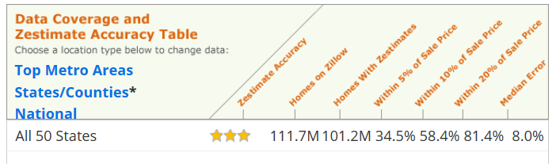
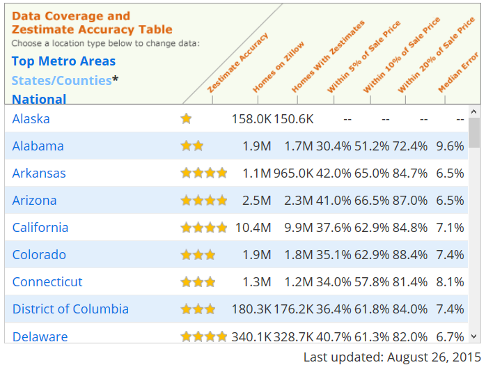
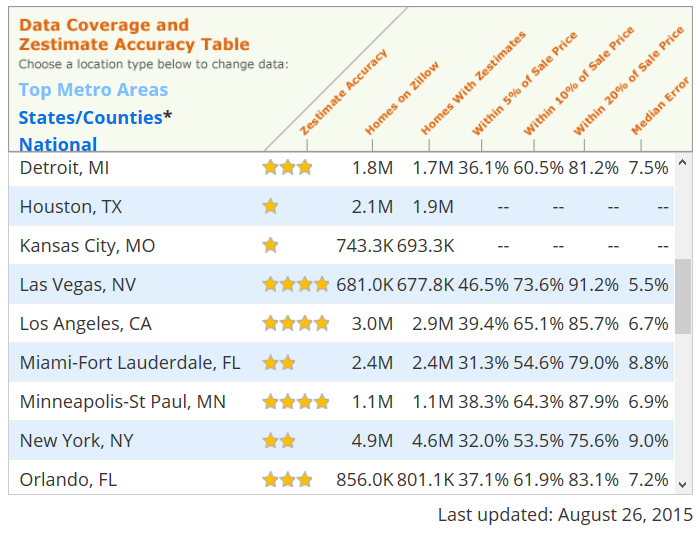

This is one of my side projects of learning on Data Science.
Introduction
I was looking at local housing market some time ago and found it was difficult to judge how much a house worth or how much it will be sold at. Real State agents could have a very good estimate based on their experience, but it is really an overwhelming problem for first time home buyer or seller.
- There are many aspects about a house that could affect how much it worth to buyer. And every buyer has different preference and priorities about these aspects.
- Only a subset of all possible buyers will see the house listing and consider it seriously. The actual candidate buyer pool is small and very susceptible to random factors like timing and other details.
- The negotiations involve more random events and human decisions.
Naturally I searched for house price estimation tool on line. The best and most complete one is Zillow.com’s Zestimate®. Using huge amount of data for more than 100 million homes and sophisticated algorithms to estimate house sale price. Their performance? Estimation within 20% of sale price in 81.4% of times. Take a $500,000 house as example, that means $100,000 error.

The formal house price assessment procedures
Not satisfied with this kind of accuracy, I did some research on house price evaluation principles. I found two formal house price assessment procedures provided some insight:
- Home owner insurance companies have a complex model to estimate cost of rebuilding the same house. The model require customer to report lots of detailed information about the house features and conditions. Sometimes insurance company will also send a professional inspector. The home owner insurance estimate doesn’t include the cost of land.
- To establish base for property tax, county government assess the value of house from time to time. Maryland utilized a combination of two methods to assess the fair market value of a house.
Cost approach is similar to insurance company that calculated the rebuild cost but added the land cost. Sales approach use the sale price of comparable properties.
It was said that they use Cost approach for house cost and Sales approach for land cost, maybe because the county have the information of land cost for real estate developers. Though I have seen lots of houses in same area have same land cost even their area vary a lot.
I can’t really use Cost approach since I don’t have the insurance company model, and the public available information for individual house are very limited and often have many errors, far less and worse than the data that insurance company can get.
Sales approach looks more promising since fair market price actually included all the information of house build cost and market trends. It may sound good, but where are comparable sales? There are no identical properties, all the reference sales must have some difference in features, time, location etc. To calculate these differences into price, we are back facing the original assessment problem again.
My analysis of house price
After some research, exploring data with programs, and my own experience in negotiations, my understandings and assumptions of house price are as follows:
House sale price is the result of negotiations between seller and buyer. They make the decision based on their estimates on several things:
- His/her own perspective. How much does it worth in his/her view? This include both objective features and subjective preferences.
- His/her estimate of the opponent in negotiation. People will only make offer/counter offer at a level that they believe it’s possible to be accepted, at least in final round of negotiation. Knowing more about the house condition and the opponent’s situation can help a lot.
There are many other factors contribute to the above two, including national and local market trends, other opinion sources like agent, the timing of everything etc.
This may seem very subjective and impossible to predict. I don’t expect public data or any model can predict each individual’s personal preference, emotional factors, all the other random events. Even if a perfect prediction on sale price exists, once it was known it will immediately push the negotiations away from the prediction.
The individual buyer/seller perspective may keep unknown, however the overall result of sales in general are more predictable because the comparable sales in market are very strong references that both side will use to establish their perspective. If there are some very comparable recent sales and they expect to have similar sales in near future(the time and location distribution are both important, sales happened long time ago are not really comparable anymore), they knew they must align their expectations with these reference points.
- If the reference price is higher, seller can always expect similar high price and continue to wait for other buyer.
- If the reference price is lower, buyer can always move on and believe there will be a similar sale at lower price.
The other side of negotiations also knew this and have to accept the market situations.
Thus I can try to establish an estimate on fair market value based on comparable sales, which can be very helpful to home buyer and seller as a good base point, not exactly prediction of final sale price.
How to measure prediction accuracy
Now it’s easier to understand why Zestimate accuracy is not that impressive, because there are too many random events of each sale cannot be predicted with publicly available data. Actually I think it will be better to just predict a fair market value and give a estimate of variation range. A specific value may look like more accurate, but the buyer/seller will not really trust it because of the big margin of error. A core value plus a range will provide more information and give buyer/seller better understanding about the house price.
Zestimate did give a value range, and the range could be narrower when there are more information available for the house, for example house in metro area could have a 10% value range instead of national average of 20%. This is understandable since more comparable sales provided more “anchors” and the variation will be small according to our analysis above.
The Zestimate accuracy for different regions also showed this effect, where Delaware is much easier to predict than Alaska. Although their houses in market are in same level, but Delaware houses must be much more dense so there will be more comparable sales for each house.

I also observed that there are very big accuracy differences among metro areas, even they all suppose to have sufficient information.

My guess is that areas that are in fast changing phase or with more diversity will be more difficult to predict than areas in stable phase. Because of the diversity and fast changes, the actual comparable sales amount is not really big. If you divide that area into smaller sections to reduce diversity and variation, the scale of data points also dropped. Thus the 4.9 millions homes in NY may not provide more comparable sales information than the 681,000 homes in Las Vegas.
Based on above findings, I adjusted my project goal from estimate house sale price to estimate fair market value and variation range. Note the fair market value in my definition is not really an objective intrinsic value. It reflected the information we can decode from the market, and the variation range cover all the factors we cannot account for. With more information — mainly comparable sales — we can have less unknown and reduce the variation range. Ideally if there are many comparable sales happened nearby and recently, these sales and the next house sale are more likely to fall in a pretty narrow range.
Comparable sales in details
Comparison implies distance. If we look at the comparable sales in depth, there are at least 3 dimensions to define distance and similarity:
- House feature. This is obvious but not easy. Everybody have his/her own preference, and the importance of house feature needed to considered under context. If there are many acceptable options, buyer could be more picky about house. However if there is not much option available, even non-perfect house features may have to be ignored.
- Location. This is another obvious dimension but it also mean different for different people:
- School district for family with needs.
- Commute and public transportation options and cost.
- Regional development which impact the house resale value in future.
- Some people also will consider the more detailed level of location like the specific location and environment in community.
- Time. More recent sales are more relevant. Depend on seller/buyer’s acceptable time span for house transaction, the length of relevant period could vary from days to months.
All the sales should be measured in these 3 dimensions to compare their similarity. These dimensions are based on objective data but have different meanings to different people. We cannot calculate each individual’s preference but we can segment people into some major groups in each dimension. For example
- School district may be top priority for some families, while young family without kids may consider transportation first.
- Investment property buyer will look at regional development and market condition.
Imagine a better real estate website: recommend houses for home buyer, list comparable sales for home buyer/seller
In the analysis of comparable sales I found there are lots of information can be useful to home buyer/seller and cannot be consolidated into a single number. My project goal of fair market value and variation range also need more context to be really meaningful.
I no longer focused on trying to produce a house price number with high accuracy any more. I think it’s a impossible and meaningless mission. The data analysis and modeling in my imagination could provide great help to home buyer/seller by giving a full list and match scores instead of a single number:
- Collect data from home seller/buyer for their preference and groups.
Based on available public data, filter houses for home buyer. I didn’t say “ideal house” because it either non-exist or too expensive and out of budget, which equal to non-exist. I also don’t think a single match score will represent all the dimensions of house. This could be a better visual tool to show the buyer’s expectation and the house’s actual score in each dimension:

The reason to make it more complicate than a single number is that people’s preference can change in different context. They may adjust the weights of dimensions according to the limit of available options or any new information. Thus a multi dimensional comparison will be more adaptive and useful.
I used some real estate websites a lot in my own experience as a customer and in my research. They sure can recommend “similar houses” for the property you have interest, but the recommendation quality often cannot meet my expectation. These websites also provide lots of filter conditions in house search, however the specific sqft value range or bedroom numbers are just the easiest data point to measure, not the best guides of how people compare houses.
List comparable sales for home buyer/seller. They will work as reference points for them to build a more accurate perspective and understanding of market. Because house sale involve multiple parties, they need to know not only the comparable sales in their own view, but also the comparable sales in the other party’s view. Of course if the preference is not public, they can only either guess the group the other party belong to or use the most general big group to estimate. These expectations are the corner stones of negotiation, thus very important in shaping the final sale price.
I believe the negotiations and the house sale could be more efficient with more information and shared reference points, and this could lead to a better market.
Back to data and analysis
I haven’t talk about much data yet in this post about Data Science. Actually I started to collect data in the very beginning in my research, but I want to have a better understanding about the problem, so I did more research, explored the data with R program, with just checking individual records by hand, try to understand the logic behind the results, built models and tested the prediction performance, then back to do more research about the problem. The theory above is the final product of a long series of research, exploring, thinking and experiments.
I have much more ideas than my implementation capacity, actually my current data analysis program didn’t use any model yet. It’s just a moving average which is very familiar to people have some experience with stock chart (moving average still implied a model that assuming changes are continuous and smooth). The performance of this simple “model” is not bad at all:
| Zillow Zestimate | My Model | |
|---|---|---|
| National, within 20% | 78.3 % | NA |
| Maryland, within 20% | 76.8 % | NA |
| My 3k dataset since 2014, within 20% | 91.87 % | 92.58% |
| My 3k dataset since 2014, within 10% | 76.47 % | 65.82% |
The performance of my simple model and Zillow Zestimate on same dataset of 3000 homes. The estimation errors are divided by the sale price, this is the metric used by Zillow to measure Zestimate accuracy.
The National and Maryland Zestimate accuracy number was taken on July, 2015. The specific Zestimate values on the dataset were downloaded from April to July. The most current Zestimate values and performance statistics may have been updated.
I’ll talk about the technical details of data and analysis of this project in next post.